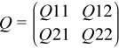

Intel® oneAPI Math Kernel Library Developer Reference - Fortran
Multiplies a general matrix by an orthogonal/unitary matrix with a 2x2 structure.
call sorm22 (side, trans, m, n, n1, n2, q, ldq, c, ldc, work, lwork, info )
call dorm22 (side, trans, m, n, n1, n2, q, ldq, c, ldc, work, lwork, info )
call cunm22(side, trans, m, n, n1, n2, q, ldq, c, ldc, work, lwork, info)
call zunm22(side, trans, m, n, n1, n2, q, ldq, c, ldc, work, lwork, info)
?orm22/?unm22 overwrites the general real/complex m-by-n matrix C with
side = 'L' |
side = 'R' |
|
trans = 'N' |
Q * C |
C * Q |
trans = 'T' applies to sorm22 and dorm22 only |
QT * C |
C * QT |
trans = 'C' applies to cunm22 and zunm22 only |
QH * C |
C * QH |
where Q is a real orthogonal/complex unitary matrix of order nq, with nq = m if side = 'L' and nq = n if side = 'R'.
The orthogonal/unitary matrix Q processes a 2-by-2 block structure:

where Q12 is an n1-by-n1 lower triangular matrix and Q21 is an n2-by-n2 upper triangular matrix.
CHARACTER*1. = 'L': apply Q, QT, or QH from the left;
= 'R': apply Q, QT, or QH from the right.
CHARACTER*1. = 'N': apply Q (no transpose);
= 'T': apply QT (transpose) - sorm22 and dorm22 only;
= 'C': apply QH (conjugate transpose) - cunm22 and zunm22 only.
INTEGER. The number of rows of the matrix C.
m≥ 0.
INTEGER. The number of columns of the matrix C.
n≥ 0.
INTEGER. The dimension of Q12.
n1≥ 0.
The following requirement must be satisfied: n1 + n2 = m if side = 'L' and n1 + n2 = n if side = 'R'.
INTEGER. The dimension of Q21.
n2≥ 0.
The following requirement must be satisfied: n1 + n2 = m if side = 'L' and n1 + n2 = n if side = 'R'.
REAL for sorm22
DOUBLE PRECISION for dorm22
COMPLEX for cunm22
DOUBLE COMPLEX for zunm22
Array, size (ldq,m) if side = 'L' and (ldq,n) if side = 'R'.
INTEGER. The leading dimension of the array q.
ldq≥ max(1,m) if side = 'L';
ldq≥ max(1,n) if side = 'R'.
REAL for sorm22
DOUBLE PRECISION for dorm22
COMPLEX for cunm22
DOUBLE COMPLEX for zunm22
Array, size (ldc,n)
On entry, the m-by-n matrix C.
INTEGER. The leading dimension of the array c.
ldc≥ max(1,m).
INTEGER. The dimension of the array work.
If side = 'L', lwork≥ max(1,n);
if side = 'R', lwork≥ max(1,m).
For optimum performance lwork≥m*n.
If lwork = -1, then a workspace query is assumed; the routine only calculates the optimal size of the work array, returns this value as the first entry of the work array, and no error message related to lwork is issued by xerbla.
c |
On exit, c is overwritten by the product: Q*C, QT*C, QH * C, C*QT, C * QH, or C*Q. |
work |
REAL for sorm22 DOUBLE PRECISION for dorm22 COMPLEX for cunm22 DOUBLE COMPLEX for zunm22 Array, size (max(1,lwork)) On exit, if info = 0, work(1) returns the optimal lwork. |
info |
INTEGER. = 0: successful exit. < 0: if info = -i, the i-th argument had an illegal value. |